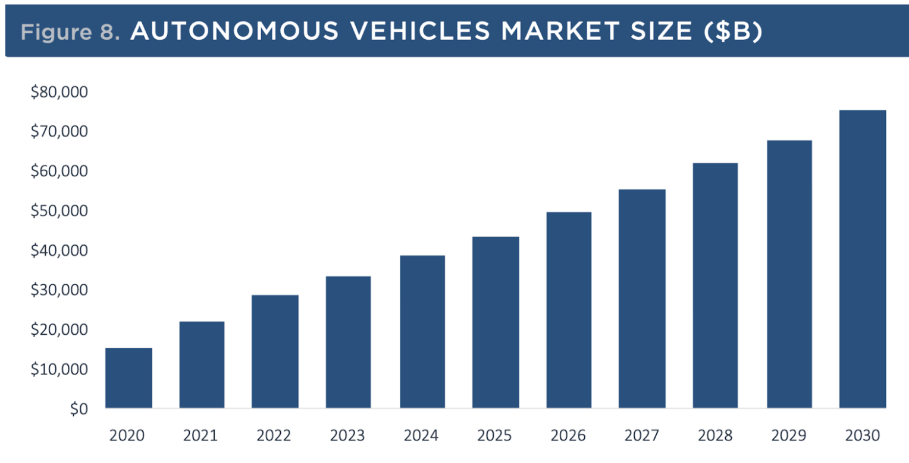

Fully autonomous vehicles
Autonomous vehicle technology refers to the hardware and software technologies that allow self-driving or driver-assist capabilities for in-road vehicles. Among these, there are three categories:
- 1. Full stack solution. A combination of hardware and software as a full turnkey solution for self-driving in two modalities:
- Self-driving direct integration
- Self-driving retrofitting
- 2. Autonomous software. This software enables self-driving capabilities, including:
- Perception, sensing, planning
- Teleoperation
- Localization and mapping
- Simulation
- 3. Hardware components. Typically these are the sensors that enable self-driving capabilities, including:
- Lidars
- Radars
- Cameras
- Ultrasound
- GPS
- Main computer/GPUs
Industry drivers for the fully autonomous vehicle revolution include:
- Reduced transportation costs. Autonomous vehicles will lower the cost of transportation for people and goods. Driving is not only time consuming, but also drains productivity. For example, a McKinsey study discussed that traffic congestion has an impact of $2-5 percent on the GDP due to wasted time and fuel.
- Improved safety. Humans are error-prone due to fatigue, distraction, unexpected health issues like a heart attack, etc. In the U.S. there are roughly 36,000 deaths a year caused by motor accidents (2020 data). Human-caused accidents cost approximately $1 Trillion each year. Autonomous vehicles will reduce road collisions and fatalities.
- OEM and technology companies are working in this space. Ford, Toyota, and Tesla are joined by newcomers Zoox, Waymo, and Cruise. Plus, there are tech companies working to innovate components for self-driving vehicles.
The market is massive as forecasted by Morning Star, as you can see in the image below.
Source: Moningstar | Geography: Global
You can read more about the enablers that will lead to this at this tech node, or watch our webinar.